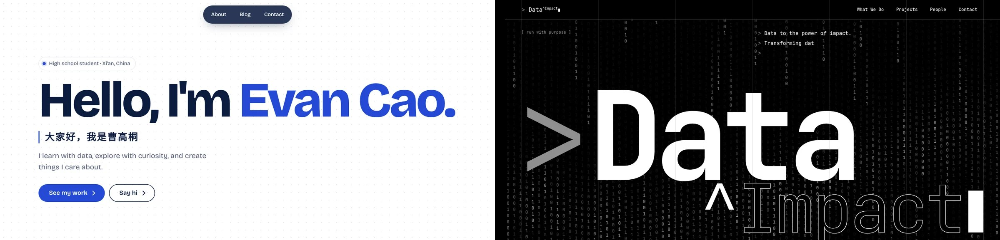

Building the Data^Impact Website
Completed on: 13/10/2026
Data^Impact is our lab’s home on the web. I designed and built it for our team so that people can explore our projects, get to know who we are, and see what the lab does: turning data into real-world impact.

Process
How I built it
It took about a week and a half in October 2026. I worked on it every day after school, usually right up until bedtime.
Understand the purpose
Before designing anything, I made sure I understood what the website was for: showing our lab’s projects and introducing our team.
Decide the style
Based on that purpose, I chose a visual style that fits a data lab.
Add the content
I added our projects and team members one by one.
Refine every detail
I went through every detail I could think of and fixed it. No shortcuts.
Keep it growing
Add new projects as the lab grows, and get better at managing and maintaining the site.
The hardest part
Building the website itself turned out to be simpler than I expected. The hard part was working with AI. AI only gives you what you ask for, so I had to learn to describe exactly what I wanted, check the result, explain what was wrong, and try again.
That back-and-forth took a lot of patience and many rounds of conversation.
What I learned
At the start I didn’t want to build a website at all. It felt difficult and not for me. By the end I felt much more confident.
Technology keeps moving forward, and with the right tools and enough patience, I found that I could not only do it, but do it well.